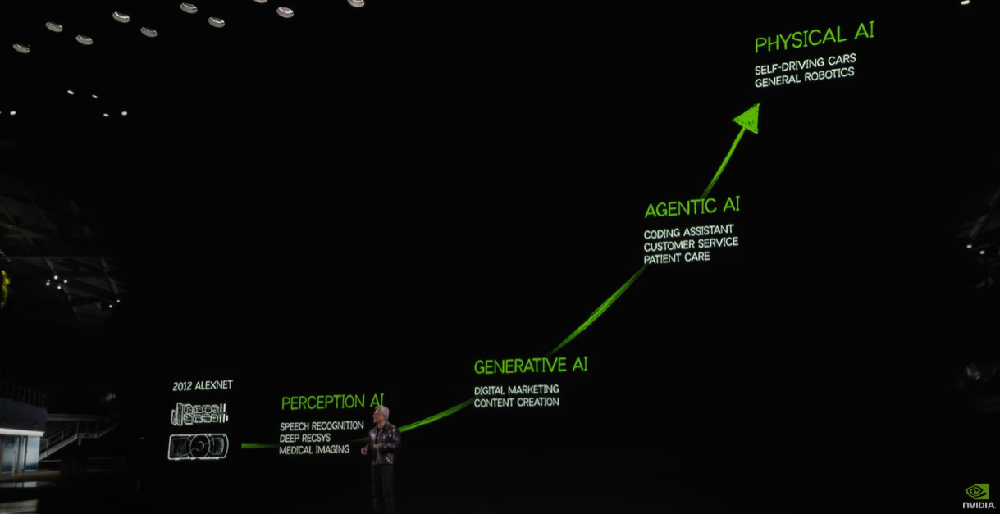

Membaca peta AGI dari Jensen Huang — dan kenapa 2027 bisa jadi titik balik buat semua orang.
Di GTC 2025, Jensen Huang naik panggung di San Jose dan ngomong sesuatu yang kebanyakan orang lewatin begitu aja: "Kita sedang membangun mesin yang bisa belajar sendiri, merencanakan sendiri, dan bekerja sendiri. Dan waktunya lebih dekat dari yang kalian kira."
Bukan hype. Bukan spekulasi. Ini dari orang yang jual GPU ke semua lab AI terbesar di dunia — dia tahu persis mesin apa yang sedang dibangun dengan chip-nya.
Yang lebih penting: dia kasih peta.
Peta yang menunjukkan di mana kita sekarang, ke mana arahnya, dan — kalau lu cukup jeli baca — siapa yang akan diuntungkan dan siapa yang tidak. Artikel ini adalah tentang membaca peta itu.
Artikel ini bukan prediksi. Ini analisis dari data publik dan roadmap yang sudah tersedia. Lu yang decide sendiri maknanya buat hidup lu.
Jensen punya cara melihat AI yang berbeda dari kebanyakan orang. Bukan satu lompatan besar ke superintelligence — tapi empat fase yang berurutan, masing-masing membangun di atas yang sebelumnya.

Perhatikan satu hal: setiap fase, jaraknya makin pendek. Perception AI butuh lebih dari satu dekade. Generative AI empat tahun. Agentic AI tiga tahun. Physical AI? Mungkin kurang dari itu.
Akselerasi ini bukan kebetulan. Ini efek compounding dari compute, data, dan algoritma yang saling memperkuat. Dan ini yang bikin 2027 bukan sekadar angka — tapi kemungkinan inflection point yang sebagian besar orang belum siap hadapi.
Lupakan definisi textbook. Mari pakai analogi yang lebih jujur.
ChatGPT sekarang = karyawan magang yang sangat pintar. Dia bisa jawab pertanyaan lu, draft email, bikin kode — tapi butuh disuruh setiap langkahnya. Lu masih jadi bos yang harus tahu mau minta apa.
AGI = CEO dengan knowledge seluas ensiklopedia. Kasih dia goal, dia figure out sendiri cara mencapainya — riset, planning, eksekusi, evaluasi, iterasi. Semua dalam loop yang berjalan tanpa lu perlu hadir di setiap langkahnya.
Narrow AI → satu tugas, satu domain. Calculator pintar yang tidak bisa melakukan hal lain.
Agentic AI → banyak tugas, banyak tools, tapi masih perlu goal dari manusia. Asisten eksekutif yang sangat kompeten — kita ada di sini sekarang.
AGI → sets its own sub-goals, evaluates its own performance, improves itself. Belum ada — tapi jaraknya makin tipis.
Yang menakutkan bukan AGI itu sendiri. Yang menakutkan adalah berapa banyak pekerjaan yang sebenarnya bisa dilakukan oleh manusia rata-rata — dan berapa banyak dari pekerjaan itu yang sudah bisa digantikan oleh Agentic AI yang ada sekarang.
Jawabannya lebih banyak dari yang mau kita akui.
Ini bukan masa depan. Ini sekarang, sudah berjalan, bisa lu cek hari ini:
Gua sendiri lagi build crypto signal aggregator pakai n8n + AI agents. Sistemnya monitor 50+ sumber data — on-chain metrics, social sentiment, whale movements, macro indicators — dan filter jadi daily briefing yang actionable. Yang dulu butuh tim analis dan nonstop monitoring, sekarang bisa dijalanin satu sistem otomatis. Ini bukan teori — ini yang lagi gua jalanin sekarang. Dan kalau gua bisa build ini, siapa pun bisa.
Agentic AI sudah ada di tangan kita. Yang belum ada di kebanyakan tangan kita adalah framework untuk memanfaatkannya secara sistematis.
Bukan hanya Jensen yang bicara soal ini. Hampir semua pemimpin industri AI konvergen ke satu arah yang sama — meski berbeda dalam detail:
"Powerful AI" yang setara "country of geniuses in a datacenter" akan tiba di late 2026 atau 2027. Dalam podcast Dwarkesh Patel (Feb 2026): "We are near the end of the exponential." Bukan akhir dari AI — tapi akhir dari fase percepatan terbesar yang pernah terjadi dalam sejarah teknologi.
Merevisi prediksi dari "30–50 tahun lagi" menjadi 5–20 tahun. Observasinya yang paling mencengangkan: setiap 7 bulan, AI bisa menyelesaikan task yang sebelumnya butuh 2x waktu lebih lama. Bukan linear — ini eksponensial yang belum berhenti.
AGI dalam "a few thousand days" — dan perhatiannya kini sudah bergeser ke superintelligence, bukan lagi AGI. Artinya: dalam kepalanya, AGI sudah hampir jadi settled question.
Dalam ~5 tahun (sekitar 2029), AI akan match atau surpass human performance di semua tes yang biasa kita pakai untuk mengukur kecerdasan manusia. Bukan semua pekerjaan sekaligus — tapi semua benchmark yang selama ini kita anggap sebagai garis batas.
Human-level performance di most professional tasks akan terjadi di 2027. Bukan semua pekerjaan — tapi sebagian besar yang kita anggap "knowledge work" dan yang selama ini dianggap aman dari otomasi.
Apakah semua CEO itu pasti benar? Tidak. Tapi apakah lu mau bertaruh hidup lu pada anggapan bahwa mereka semua salah?
Ketika AGI — atau bahkan Agentic AI yang sudah ada sekarang — mencapai skala penuh, ada dua skenario yang paling sering dibicarakan. Keduanya mungkin benar, tapi buat orang yang berbeda.
Masa depan kemungkinan besar bukan A atau B — tapi A buat sebagian orang, B buat yang lain.
Garis pemisahnya bukan seberapa pintar lu. Bukan seberapa berpendidikan lu. Garis pemisahnya adalah: apakah lu di sisi yang menggunakan leverage AI, atau di sisi yang menjadi kompetitor langsung AI.
Pertanyaannya bukan "akan ke mana AI." Pertanyaannya adalah lu mau ada di kelompok mana?
Bukan tentang menjadi engineer. Bukan tentang pindah ke Silicon Valley. Ini tentang tiga layer perubahan yang bisa dimulai sekarang, dengan apa yang lu sudah punya.
Layer 1 adalah mental game. Layer 2 adalah aksi konkret. Layer 3 adalah compounding jangka panjang. Ketiga-tiganya harus jalan bersamaan — tapi dimulai satu per satu, hari ini.
Diskusi tentang AGI hampir selalu berpusat di Silicon Valley, London, Beijing. Indonesia jarang masuk frame — padahal justru di sinilah stakes-nya paling tinggi.
Tiga angle yang jarang dibahas:
Sementara Silicon Valley sibuk debat soal AGI safety dan existential risk, di sini kita masih sibuk debat soal kuota internet dan literasi digital dasar. Tapi justru di sinilah opportunity-nya — karena bar masuknya masih rendah, first-mover advantage masih besar, dan yang bergerak duluan akan punya moat yang nyata.
AGI mungkin akan datang dalam 5 tahun. Mungkin 10. Mungkin lebih lama dari yang semua orang prediksi, atau lebih cepat dari yang kita siap hadapi. Tidak ada yang tahu pasti.
Tapi yang pasti — Agentic AI sudah di sini, sekarang, hari ini. Dan setiap hari yang lu habiskan tanpa adaptasi bukan hanya "hari yang hilang" — itu hari di mana orang lain semakin jauh di depan, membangun sistem yang akan compound selama bertahun-tahun ke depan.
Lu tidak perlu jadi engineer. Lu tidak perlu pindah ke Silicon Valley. Lu tidak perlu angkat tangan dan menyerah pada "disrupsi" seolah itu bencana alam yang tidak bisa dihindari.
Lu cuma perlu satu hal: mulai hari ini, perlakukan AI bukan sebagai ancaman atau sekadar alat, tapi sebagai partner permanen dalam membangun hidup lu.
Wealth transfer terbesar dalam sejarah sedang terjadi — bukan dari satu negara ke negara lain, bukan dari satu industri ke industri lain. Dari mereka yang menunggu, ke mereka yang bergerak.
Mindset shift sudah? Skill stack sedang dibangun? Capital allocation sudah ter-align? Atau masih di titik nol dan baru mulai aware? Tidak ada jawaban yang salah — yang salah hanya tidak menjawab sama sekali.
Dapatkan notifikasi tiap ada analisis baru. No spam.